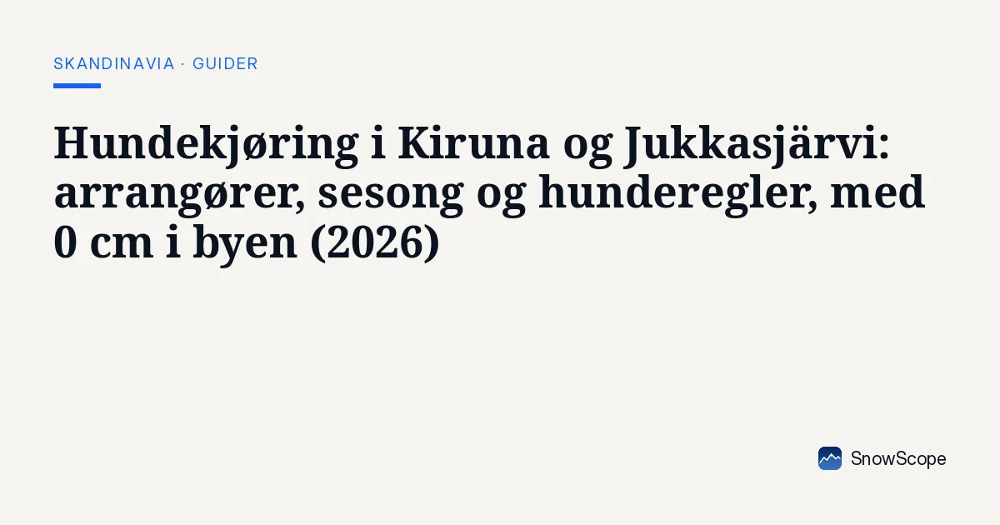

Hundekjøring i Kiruna og Jukkasjärvi: arrangører, sesong og hunderegler, med 0 cm i byen (2026)
Tidlig november ga nesten ingen snø til Kiruna og de lave dalene rundt. 13. november målte værstasjonen i byen 0 cm, det samme gjorde Jukkasjärvi i øst og Esrange lengre sør. Opp mot den norske grensen ved Katterjåkk lå det 9 cm på bakken. For den som planlegger en husky-tur denne måneden er beskjeden klar: ring operatøren og spør om turen kjører, fordi de fleste trenger et snødekke på stiene.
Se snøprognosen for Scandinavia direkte i SnowScope-appenSnødybde, puddervarsler og 3D-kartet, gratis.

Når hundekjøringsesongen starter her
Flere operatører i nærheten av Kiruna planlegger å åpne sesongen rundt midten av november, men snødybde betyr mer enn kalenderen. Active Lapland tilbyr en morgentur på omkring 13 km for 1 800 SEK per person, med lengre turer hvor du styrer ditt eget lag. Kiruna Husky, basert ved Kalixforsbron, sier turene kjører fra desember til mars, med sesongen åpen fra midten av november til midten av april. Kiruna Sleddog Tours kjører en daglig tur på omkring 2,5 timer. Arctic Dogsled Adventures tilbyr en helturstur på omkring 4,5 timer inkludert transport, hvor du kjører et lag med tre eller fire hunder.
Siden stiene stort sett er bare nå, betyr tidlige bestillinger ofte hjulvogner i stedet for sleder, eller kortere løyper som bruker snøflekker. Når november går videre og kulden slår seg ned, vil snøen sannsynlig bygges opp på høyere områder og i skogen. Kontakt din valgte operatør for å finne ut hva som skjer hvis snøen ikke har kommet ennå på din valgte dato.
Svært kort dagslys former turplanen
Kiruna ligger langt nord, og novemberlysen forsvinner raskt. 15. november varer dagen omkring 5 timer; innen 30. november er det ned til under 3 timer. Fra 11. desember og fremover stiger ikke solen over horisonten i det hele tatt før midten av januar. Turoperatører planlegger morgenturer rundt den lyseste delen av dagen for sikkerhet og glede.
Hvis du planlegger å utforske til fots eller ta din egen hund ut på en tur, pak en hodelykter og bruk en refleksvest. Kulden i dalene her kan være skarp selv når lufttemperaturen ikke er ekstrem, så ta med varme, vanntette støvler.
Regler for hunder i Kiruna og reinsdyrland
Svenske nasjonale lover sier at hunder ikke kan løpe løs hvor ville dyr lever fra 1. mars til 20. august. Utenfor disse månedene gjelder ikke regelen, men vinteren bringer andre regler. Hele Kiruna-området er reinsdyrland, noe som betyr at hunder må være i bånd nær flokker og i alle reinsdyrbeiter. Nasjonalparker og naturreservater krever bånd til enhver tid.
To parker nær Kiruna har begrenset tilgang. I Abisko og Vadvetjåkka nasjonalparker er hunder tillatt bare fra 1. januar til 30. april, og alltid i bånd. I Abisko kan en hundt i bånd gå på veiene og merkede stier året rundt og bruke området rundt besøkssenteret. Inne i Kiruna by selv, krever lokale regler bånd i alle bebyggete områder og på merkede stier. Kommunens kledde skiløyper er forbudt for hunder om vinteren med mindre et skilt tillater det. En innhegnet hundepark står på Kyrkogatan for utebundet lek.
Hva du skal ta med og hva du kan forvente
Tidlig sesongs snø her pleier å være tynn og flekkvis. Steiner, gress og stidirt kan vise gjennom. Guider er vant til dette og tilpasser ruten, men forvent kortere avstander og flere stans enn en midtvinters tur ville gitt. Mange operatører bærer med seg reservetepper eller frakker for å holde hundene varme under stanser.
Dalene rundt Jukkasjärvi forblir kallere enn lufttemperaturen tilsier, spesielt tidlig om morgenen. Selv om værmeldingen ser mild ut, ta med ett ekstra lag og vindtette hansker. En varm drikk i en termos er en god idé.
Tips til skiløpere
- Kontakt operatøren din minst en uke i forveien for å bekrefte snøforholdene på din planlagte dato. Tidlig i november kan hjulvogner eller kortere ruter erstatte fulle sledturer.
- Ta med hodelykter, refleksutstyr og varme, vanntette støvler. Novemberlysen er kort og dalekylden er riktig.
- Hvis du går med din egen hund, holdt deg unna kledde skiløyper og hold hundens bånd på hvor reinsdyr kan være—de er vanlige om vinteren rundt Kiruna.
- Sjekk operatørens kuldepolitikk. Noen kjører ikke når temperaturen faller under -20 °C.
- For sikkerhet på reinsdyrland, spør lokale folk om nylige flokksteder før du drar.
Om tallene
Snødybdene for skistedene er det dypeste snødekket i de øvre bakkene på datoen som vises; de er anslag for et område, ikke en måling i ett punkt. Prognoser kan endre seg. Les alltid det offisielle snøskredvarselet før du kjører utenfor preparert løype.
Siter denne rapporten
For forskning, undervisning eller presse: tallene og diagrammene kan brukes fritt under CC BY 4.0 med denne kildehenvisningen.
SnowScope (2026), Hundekjøring i Kiruna og Jukkasjärvi: arrangører, sesong og hunderegler, med 0 cm i byen (2026), https://snowscope.app/blog/nb/2026/11/kiruna-dog-sledding-jukkasjarvi-winter-guide-2026.html, hentet 2026-11-14
SnowScope (Atlas Labs). (2026, November 14). Hundekjøring i Kiruna og Jukkasjärvi: arrangører, sesong og hunderegler, med 0 cm i byen (2026). SnowScope snow reports. https://snowscope.app/blog/nb/2026/11/kiruna-dog-sledding-jukkasjarvi-winter-guide-2026.html
BibTeX
@misc{snowscope2026kirunadogsleddingjukkasj,
author = {{SnowScope (Atlas Labs)}},
title = {Hundekjøring i Kiruna og Jukkasjärvi: arrangører, sesong og hunderegler, med 0 cm i byen (2026)},
year = {2026},
month = nov,
howpublished = {\url{https://snowscope.app/blog/nb/2026/11/kiruna-dog-sledding-jukkasjarvi-winter-guide-2026.html}},
note = {Published 2026-11-14 17:39 UTC; accessed 2026-11-14}
}· CC BY 4.0 · Metoder, data og verktøy →
Følg Scandinavia
Gratis: en melding når nysnø er på vei, og prognosen hver morgen.